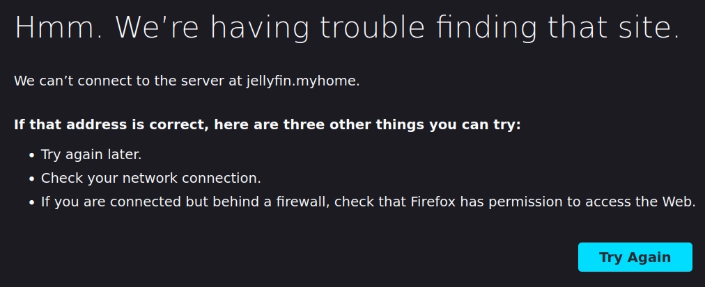

Did you ever wonder what domain name to use for your home network?
2023-02-12
Neither did I. That is, until I wanted to have easy-to-remember urls that I can access from any device I own without having to type in a long ip-address. For example, instead of writing http://192.168.0.123:1234, I want to be able to type https://jellyfin.myhome to navigate to my jellyfin instance.
I run a local DNS server adguard, which means I can use use DNS rewrites to capture outgoing DNS requests. Adguard then points whoever sends the requests to a server or service in my network. Very convenient.
Firefox struggles
Except... this didn't work. It turns out my first roadblock was Firefox. All my queries would give me the following screen:
{kind=link}

It turns out that firefox has an allowlist of accepted domains. These are all the registered global TLDs. Additional entries are defined in about:config under browser.fixup.domainsuffixwhitelist.*. These are the additional special TLDs that firefox allows as defined by IANA:
.develop.example.intranet.local.localhost.test
While I could add a TLD of my own choice (i.e. browser.fixup.domainsuffixwhitelist.myhome)1, I would have to do this on every device I own. The added risk is that I do not own the myhome TLD, so I have no control over if someone else registers this domain. This is not really an issue for a hobby home network with a couple of devices homelab, but still something to keep in mind.
Instead, I settled on .local. This worked well... for a while.
Multi-cast DNS?
I shortly realized that while I could access my services via firefox (🥳) and SSH in Windows, I could no longer SSH from linux anymore. Somehow the DNS would resolve correctly:
$ nslookup jellyfin.local
Server: 192.168.0.123
Address: 192.168.0.123#53
Non-authoritative answer:
Name: jellyfin.local
Address: 192.168.0.123But ping would fail:
$ ping jellyfin.local
ping: jellyfin.local: Name or service not knownWhat I didn't know is that .local is essentially reserved for multi-cast DNS (mDNS) as defined by RFC6762. I had never heard about this, but apparently mDNS means servers can define their own names and advertise them on the network. It is zero-configuration, as opposed to a conventional (unicast) DNS server.
My linux distro of choice (Debian) tries to resolve mDNS first, where Windows does not. On Linux this behaviour is defined in /etc/nsswitch.conf. Setting hosts to files dns works around the issue.
$ cat /etc/nsswitch.conf | grep hosts
hosts: files mdns4_minimal [NOTFOUND=return] dnsThis again leads me back to the problem of having to define this behaviour on all of my 3 linux machines.
tldr: use .home.arpa
All of this left me wondering, what is the right local domain to use?
Apparently there is a relatively new standard for this defined by RFC8375:
This document specifies the behavior that is expected from the Domain Name System with regard to DNS queries for names ending with
.home.arpa.and designates this domain as a special-use domain name.home.arpa.is designated for non-unique use in residential home networks. The Home Networking Control Protocol (HNCP) is updated to use thehome.arpa.domain instead of.home.
The idea is that using a TLD you do not control means that it might eventually get registered, leaking information onto the global web. .home.arpa is a subdomain of .arpa for exactly the purpose of home networks. .arpa itself is a special TLD used used for the management of technical network infrastructure of the internet.2 This guarantees that this domain is safe to use.
Alternatively, you can register your own domain (i.e. https://stefsmeets.nl in my case), which holds the same guarantees.
I ended up using *.home.arpa for my local services. Everything, including http://jellyfin.home.arpa, seems to work as advertised. Which means zero-configuration on my part for any new devices I add to my network!
I tried and it totally works!
https://en.wikipedia.org/wiki/.arpa